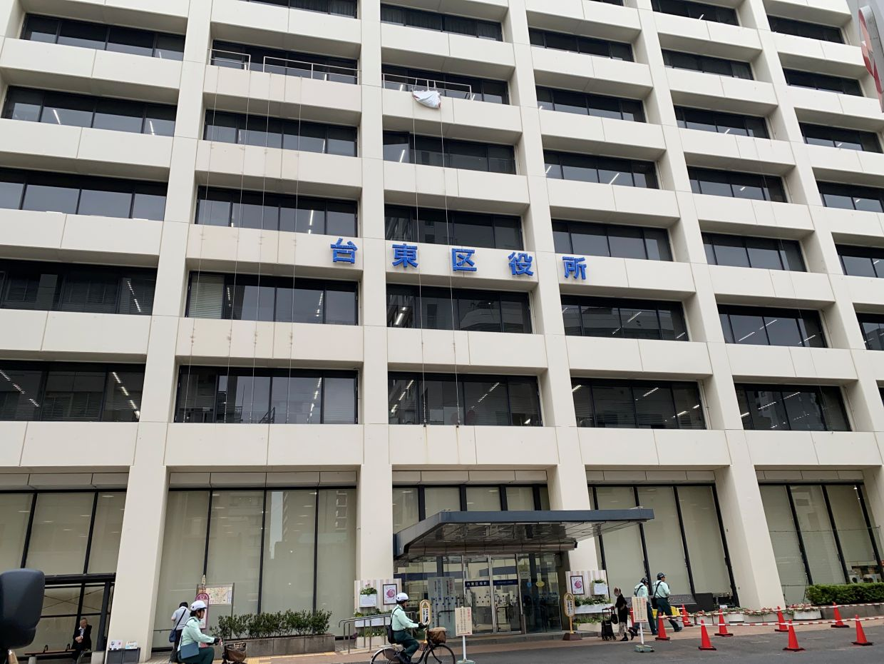
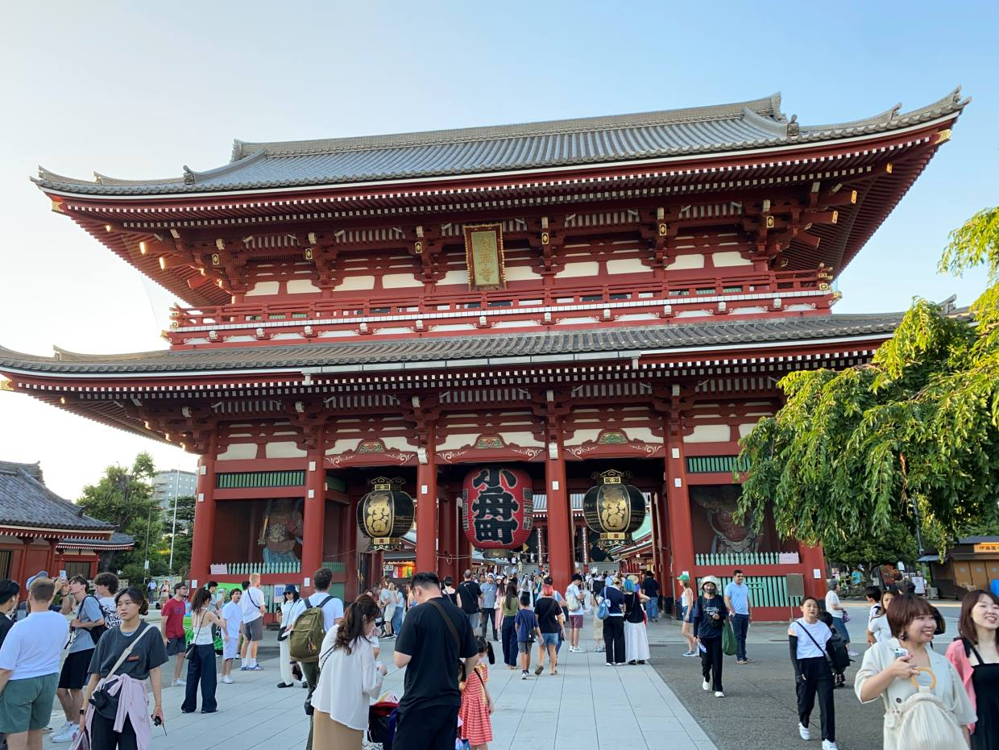
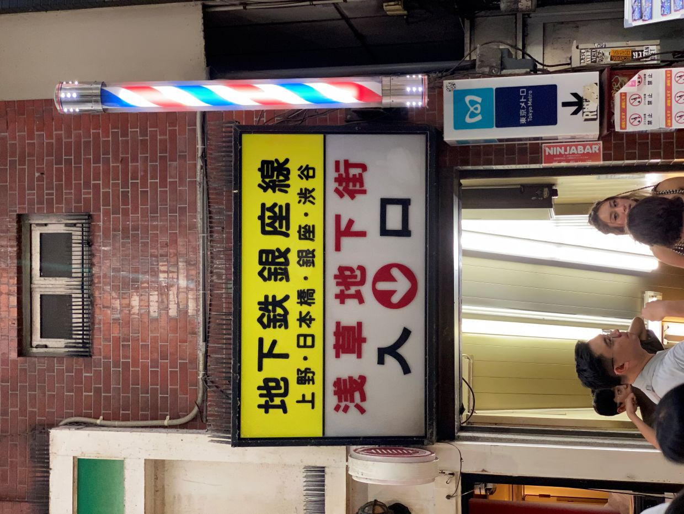
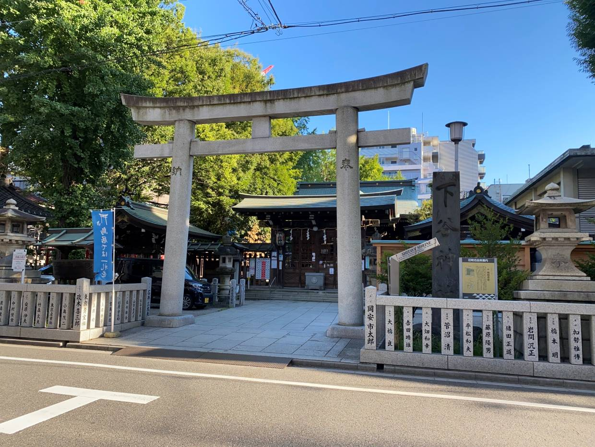

東京都 台東区
役場

浅草寺

浅草地下街

下谷神社

台東区は浅草のある下町です。浅草寺は特に有名で、言わずと知れた大提灯や五重塔があります。 上野も台東区になるので、国立博物館やアメ横もあります。東京観光には外せない場所です。




台東区は浅草のある下町です。浅草寺は特に有名で、言わずと知れた大提灯や五重塔があります。 上野も台東区になるので、国立博物館やアメ横もあります。東京観光には外せない場所です。